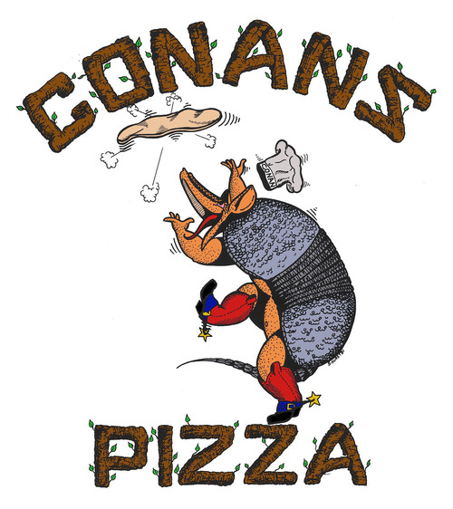

Milto's Mediterranean Cafe
This is by far my favorite Austin pizza joint. Locally owned and operated since 1977, Milto's combines great food, service, and atmosphere at an affordable price. Conveniently located in central Austin, stop by during lunch for an eggplant parm or the best Greek salad this side of the Aegean Sea.
My recommendations:
- Primavera pizza
- Small Greek salad
- Baklava
Conan's Pizza

If Chicago style deep-dish is more your speed, look no further than Conan's Pizza. A true Austin original, Conan's is known for its deep pan wheat dough, its everything pizza (the Savage), and its unique decorative flair, the walls decked with racy comic book art and memorabilia.
My recommendations:
- Small deep dish pepperoni
- Spinach Calzone
- Lone Star
Buffalina Pizza

Boasting a wood-fire oven that burns hotter than 900 degrees, Bufalina proves that authentic Neopolitan style pizza still appeals to mainstream pizza eaters. Using ingredients also imported from the region, Bufalina also has an impressive wine and beer selection.
My recommendations: